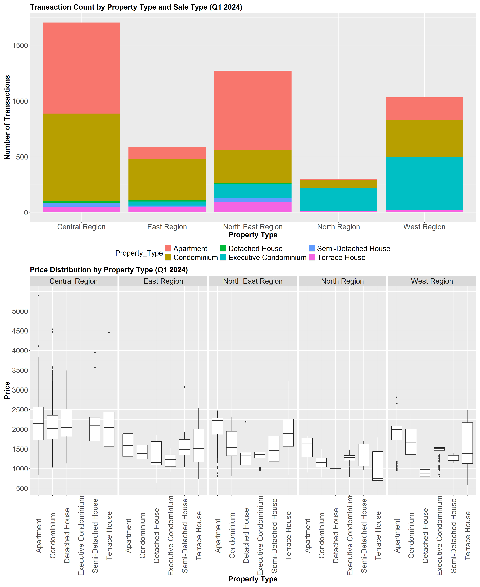

library("pacman")
suppressWarnings(("lubridate"))[1] "lubridate"library(readr)There are two major residential property market in Singapore, namely public and private housing. Public housing aims to meet the basic need of the general public with monthly household income less than or equal to S$14,000. For families with monthly household income more than S$14,000, they need to turn to the private residential market.
In this exercise, Exploratory Data Analysis (EDA) methods and ggplot functions are used to explore:
the private residential markets and sub-markets of Singapore
the variations of unit price,unitsize etc between different property types,sale types
We load the following R packages using the pacman::p_load() function:
tidyverse: Core collection of R packages designed for data science
haven: To read in data formats such as SAS and SPSS
ggrepel: to provides geoms for ggplot2 to repel overlapping text labels
ggthemes: to use additional themes for ggplot2
patchwork: to prepare composite figure created using ggplot2
ggridges: to plot ridgeline plots
ggdist: for visualizations of distributions and uncertainty
scales: provides the internal scaling infrastructure used by ggplot2
library("pacman")
suppressWarnings(("lubridate"))[1] "lubridate"library(readr)pacman::p_load(tidyverse, haven,
ggrepel, ggthemes,
ggridges, ggdist,colorspace,ggdist,
patchwork, scales)The dataset (data/ResidentialTransaction20240414220633.csv) used in the exercise is a subset of the transaction data of REALIS questionnaire data file retrieved from the https://www.ura.gov.sg/reis/index. It has been filtered to include only the private residential transaction data for q1 2024.
We import this dataset as res_data.
#res_data1 <- read_csv("data/ResidentialTransaction20240308160536.csv",show_col_types = FALSE)
#res_data2 <- read_csv("data/ResidentialTransaction20240308160736.csv",show_col_types = FALSE)
#res_data3 <- read_csv("data/ResidentialTransaction20240308161009.csv",show_col_types = FALSE)
#res_data4 <- read_csv("data/ResidentialTransaction20240308161109.csv",show_col_types = FALSE)
#res_data5 <- read_csv("data/ResidentialTransaction20240414220633.csv",show_col_types = FALSE)
#res_data <- bind_rows(res_data1, res_data2, res_data3, res_data4, res_data5)res_data <- read_csv("data/ResidentialTransaction20240414220633.csv",show_col_types = FALSE)nrow(res_data)[1] 4902#res_data_q1_2024 <- res_data_final %>%
# mutate(Sale_Date = as.Date(Sale_Date, format = "%d %b %Y")) %>%
#filter(quarter(Sale_Date) == 1 & year(Sale_Date) == 2024)We first take a look at the data, and check if there are any duplicate entries.
glimpse(res_data)Rows: 4,902
Columns: 21
$ `Project Name` <chr> "THE LANDMARK", "POLLEN COLLECTION", "SK…
$ `Transacted Price ($)` <dbl> 2726888, 3850000, 2346000, 2190000, 1954…
$ `Area (SQFT)` <dbl> 1076.40, 1808.35, 1087.16, 807.30, 796.5…
$ `Unit Price ($ PSF)` <dbl> 2533, 2129, 2158, 2713, 2453, 2577, 838,…
$ `Sale Date` <chr> "01 Jan 2024", "01 Jan 2024", "01 Jan 20…
$ Address <chr> "173 CHIN SWEE ROAD #22-11", "34 POLLEN …
$ `Type of Sale` <chr> "New Sale", "New Sale", "New Sale", "New…
$ `Type of Area` <chr> "Strata", "Land", "Strata", "Strata", "S…
$ `Area (SQM)` <dbl> 100.0, 168.0, 101.0, 75.0, 74.0, 123.0, …
$ `Unit Price ($ PSM)` <dbl> 27269, 22917, 23228, 29200, 26405, 27741…
$ `Nett Price($)` <chr> "-", "-", "-", "-", "-", "-", "-", "-", …
$ `Property Type` <chr> "Condominium", "Terrace House", "Apartme…
$ `Number of Units` <dbl> 1, 1, 1, 1, 1, 1, 1, 1, 1, 1, 1, 1, 1, 1…
$ Tenure <chr> "99 yrs from 28/08/2020", "99 yrs from 0…
$ `Completion Date` <chr> "Uncompleted", "Uncompleted", "Uncomplet…
$ `Purchaser Address Indicator` <chr> "Private", "N.A", "HDB", "N.A", "Private…
$ `Postal Code` <chr> "169878", "807233", "469657", "118992", …
$ `Postal District` <chr> "03", "28", "16", "05", "21", "21", "28"…
$ `Postal Sector` <chr> "16", "80", "46", "11", "59", "58", "79"…
$ `Planning Region` <chr> "Central Region", "North East Region", "…
$ `Planning Area` <chr> "Outram", "Serangoon", "Bedok", "Queenst…Using the duplicated function, we see that there are no duplicate entries in the data.
res_data[duplicated(res_data),]# A tibble: 0 × 21
# ℹ 21 variables: Project Name <chr>, Transacted Price ($) <dbl>,
# Area (SQFT) <dbl>, Unit Price ($ PSF) <dbl>, Sale Date <chr>,
# Address <chr>, Type of Sale <chr>, Type of Area <chr>, Area (SQM) <dbl>,
# Unit Price ($ PSM) <dbl>, Nett Price($) <chr>, Property Type <chr>,
# Number of Units <dbl>, Tenure <chr>, Completion Date <chr>,
# Purchaser Address Indicator <chr>, Postal Code <chr>,
# Postal District <chr>, Postal Sector <chr>, Planning Region <chr>, …for(column_name in names(res_data)) {
na_count <- sum(is.na(res_data[[column_name]]))
if (na_count > 0) {
message("Column '", column_name, "' has ", na_count, " NA values.")
}
}Next, we want to reduce the size of the dataset to focus on the variables that would be suitable for this exercise. Primarily referred to the https://www.ura.gov.sg/reis/dataDictionary
The primary columns/variables that will be used in this exercise are:
| Field Name | Field Description |
|---|---|
| Property Type | Terrace House,Semi-Detached House,Executive Condominium,Detached House,Condominium,Apartment |
| Area (SQFT) | Area of the property in sqft |
| Unit Price ($ PSF) | Unit Price of the property in sqft |
| Sale Date | Date of the sale transaction |
| Type of Sale | New Sale,Resale,Sub Sale |
| Planning Region | Central,East,West,North,North East |
| Planning Area |
res_data_q1_2024 = res_data %>%
select("Property Type", "Area (SQFT)","Unit Price ($ PSF)","Sale Date","Transacted Price ($)","Postal District","Type of Sale","Planning Region","Planning Area","Purchaser Address Indicator") %>%
rename("Property_Type" = "Property Type",
"Area_sqft" = "Area (SQFT)",
"Unit_Price_sqft"="Unit Price ($ PSF)",
"Sale_Date"="Sale Date",
"Sale_Price"="Transacted Price ($)",
"Postal_District"="Postal District",
"Sale_Type"="Type of Sale",
"Planning_Region"="Planning Region",
"Planning_Area"="Planning Area",
"Purchaser_Address_Indicator"="Purchaser Address Indicator")To visualize the transaction counts among different property types in different Planning regions and drill down to planning area.
We plot a stacked bar chart that shows the transaction counts across the planning regions and the stacks shows the split of counts between different Property Types.
#abc| InSights |
|---|
|

#abc| Insights |
|---|
|
To visualize the transaction counts among different property types in different Planning regions
We plot a stacked bar chart that shows the transaction counts across the planning regions and the stacks shows the split of counts between different Property Types.
Adding a box plot to understand the variability of price across different Planning regions for each Property Type.

#abc| Insights |
|---|
|
Here we are visualizing the distribution of transaction data across different Sale type ie New Sale, Resale,Subsale in the form of a rain cloud plot.
Components of a Raincloud Plot:
“Cloud” (Violin Plot): This is a rotated and horizontally aligned kernel density estimation that shows the distribution of the transaction counts for each planning area. The denser the area of the cloud, the more data points are concentrated at that value.
“Rain” (Strip Plot): These are individual data points (transaction counts) represented as dots, plotted vertically or jittered slightly to avoid overplotting. They show the raw data distribution.
Boxplot: This summarizes the central tendency (median) and variability (interquartile range) of the transaction counts for each planning area.
#abc| Insights |
|---|
For New sale there are 2 peaks in transaction counts hovering around 1500 and 2250 unit price sqft There are more higher outlier data in Resale transaction |